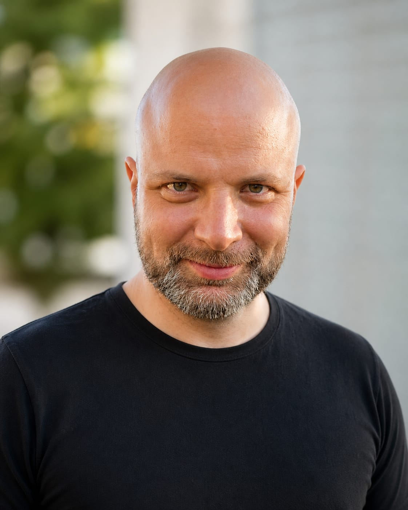

What to do next. Which path to choose. Whether to stay or leave. How to keep delivering without burning out.
You feel it in decisions you postpone, in options that don't quite fit, or in pressure that keeps coming back.
I work with senior AI and data professionals to cut through and define the right next move.
Book a 30-minute callPhD in Math · MSc in AI · ACC coach · 17 years in AI delivery · 400+ coaching sessions

Karel Macek
PhD · MSc · ACC
The problem is the weight of it. Too many options, too many directions, too much noise in the market. You're not lost — you're overwhelmed. And when everything feels equally possible, nothing moves.
You are weighing the technical track against leadership — and not sure which pull is real.
You are performing — but at a cost that doesn't feel sustainable.
You are deciding whether to stay or leave — and both options cost something real.
One important question. Three focused sessions. One clear next step.
We work through what's stuck. We name the real options and cut the false ones. We define the move that fits your actual situation — not a generic best practice.
You leave knowing what to do and why. With enough clarity to act, and enough confidence to commit.
What happens in the sprint:
Some situations need more than three sessions.
This is for people working on 2–3 goals that need sustained focus — real work, not just reflection. The kind that shifts how you perform, lead, or position yourself over time.
We meet regularly. We track what moves and what doesn't. Twelve weeks is long enough for real change, close enough to stay sharp.
Book a deep-dive conversationFree. 30 minutes. We talk about your situation and what you're trying to resolve. I'll tell you honestly if I can help.
Sessions via video call, 60–75 minutes. We go directly at the real question — not a template, not a process for its own sake.
Each session ends with clarity on the next step. Not notes to process later. A decision made or a direction set.
By default, all coaching is strictly confidential and conducted under the ICF Code of Ethics.
17 years in AI
Across research, delivery, and leadership. I know this world technically and organizationally.
400+ coaching sessions
Mostly with technical and senior professionals.
100+ AI/ML interviews
Across 6 companies. I know how senior talent is assessed and where people lose.
PhD · MSc · ACC
Mathematical Engineering, Artificial Intelligence, and a trained coaching method.
"The results still feel almost improbable to me. I spent a year abroad and came back with experience I couldn't have bought. My thesis was highly praised. And I eventually moved to London to start an interesting and rich career. I don't think any of it would have happened the same way without him."
"I was lucky enough to work with Karel as my personal coach between 2013 and 2015. At the time I was finishing my Master's thesis, juggling work and studies, and trying to figure out what came next. I felt stuck. I knew I wanted to travel and eventually work abroad, but I kept postponing it or missing opportunities, caught between uncertainty and the feeling that I should have everything figured out first. Personal development was a big topic for me too, but I was interested in so many things at once that I kept jumping from one thing to the next, without moving forward with what actually mattered.
Karel helped me see the threads connecting things I had been treating as separate problems, and to notice patterns I would have missed on my own. My studies, my vague career ambitions, the travel I kept putting off, the scattered interests. He helped me see how they fit together, and then break them down into goals concrete enough to actually move on.
The results still feel almost improbable to me. I spent a year abroad and came back with experience I couldn't have bought. My thesis was highly praised. And I eventually moved to London to start an interesting and rich career. I don't think any of it would have happened the same way without him.
I'm deeply grateful to Karel. For the clarity, the patience, and for trusting me to find my own answers while making sure I actually found them."
"He is a brilliant navigator — able to assist you with finding your way out of unexpected situations, while walking with you as a reliable ally."
"I had the privilege of having Karel as my personal coach for 3 months in spring 2014.
In the beginning of my coaching sessions, I had no clear vision. I was full of curiosity and had many questions. However, due to the professional guidance of Karel, I was able to strive towards respective goals and find my direction. The coaching experience as a whole was not an effortless or uneventful one. I became surprised not only by the unexpected turns and changes, but also by myself in certain situations.
He is a brilliant navigator that is able to assist you with finding your way out of 'labyrinths' of various unexpected and unpleasant occasions and situations. At the same time, he can be your supporter that walks with you as a reliable ally for overcoming your current or perceived obstacles.
Moreover, what I really value is his uncommon ability to see and create original associations and to think outside the box. By using this gift, he enables you to gain new and uncommon perspectives on your current situation from the big picture to the smallest and seemingly unimportant details."
"I still use, to this day, the valuable approaches to solving problems and life situations that support inner confidence and a positive outlook."
"I can warmly recommend coaching with Karel, which I attended between 2013 and 2014. I still use, to this day, the valuable approaches to solving problems and life situations that support inner confidence and a positive outlook."
I'm Karel Macek. I coach senior AI and data professionals at a real decision point.
Seventeen years in AI and data — research, delivery, leadership, hiring. I've run large ML projects, managed teams, and interviewed over a hundred senior candidates across six companies. I know this world technically and organizationally.
I'm also an ACC certified coach, started with coaching already in 2013. Trained at Neuroleadership Institute for both individual and team coaching. The approach is based on neuroscience - designed to handle complex topics in a brain-friendly way. And to achieve results.
If this fits where you are right now, book a free call.
We'll look at your situation together.
I'll tell you honestly if I can help.
Or write to me at karel@macek.ai